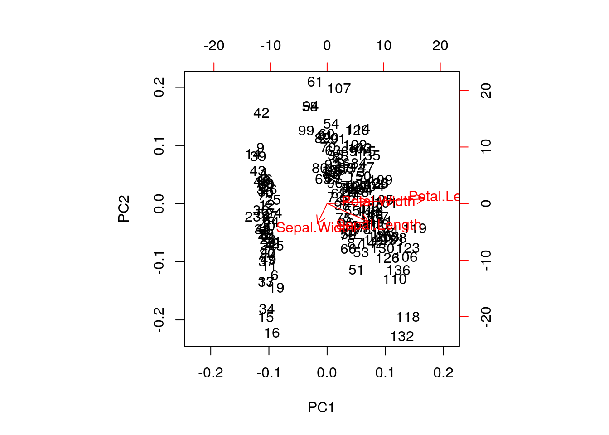
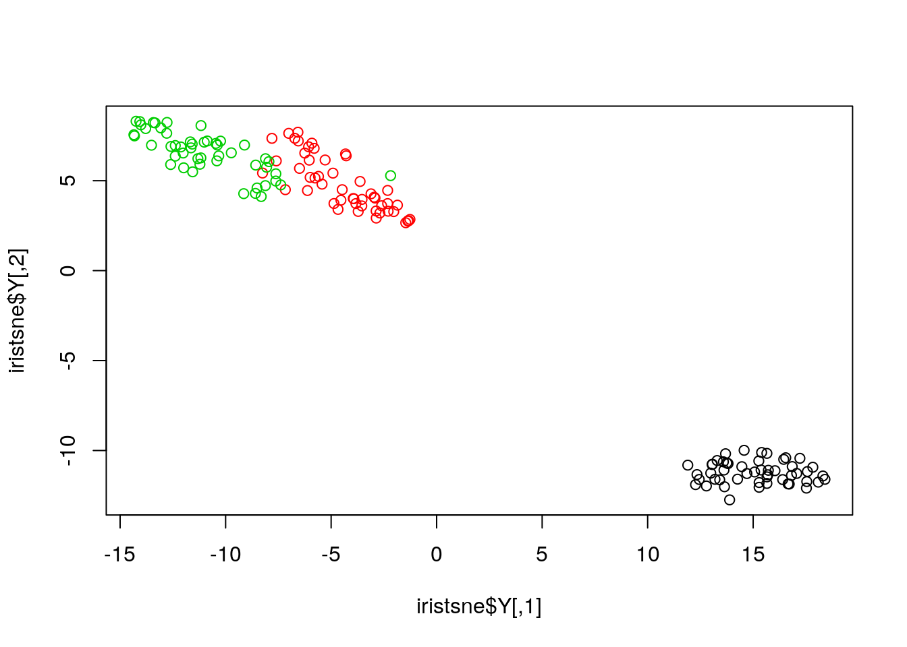

Chapter 9 Dimensionality reduction
Dimensionality reduction techniques are widely used and versatile techniques that can be used to:
- find structure in features
- pre-processing for other ML algorithms, and
- aid in visualisation.
The basic principle of dimensionality reduction techniques is to transform the data into a new space that summarise properties of the whole data set along a reduced number of dimensions. These are then ideal candidates used to visualise the data along these reduced number of informative dimensions.
9.1 Principal component analysis (PCA)
Principal Component Analysis (PCA) is a technique that transforms the original n-dimensional data into a new n-dimensional space.
- These new dimensions are linear combinations of the original data, i.e. they are composed of proportions of the original variables.
- Along these new dimensions, called principal components, the data expresses most of its variability along the first PC, then second, …
- Principal components are orthogonal to each other, i.e. non-correlated.
Figure 9.1: Original data (left). PC1 will maximise the variability while minimising the residuals (centre). PC2 is orthogonal to PC1 (right).

In R, we can use the prcomp function.
Let’s explore PCA on the iris data. While it contains only 4
variables, is already becomes difficult to visualise the 3 groups
along all these dimensions.

Let’s use PCA to reduce the dimension.
## Importance of components:
## PC1 PC2 PC3 PC4
## Standard deviation 2.0563 0.49262 0.2797 0.15439
## Proportion of Variance 0.9246 0.05307 0.0171 0.00521
## Cumulative Proportion 0.9246 0.97769 0.9948 1.00000A summary of the prcomp output shows that along PC1 along, we are
able to retain over 92% of the total variability in the data.
Figure 9.2: Iris data along PC1.

9.1.1 Visualisation
A biplot features all original points re-mapped (rotated) along the first two PCs as well as the original features as vectors along the same PCs. Feature vectors that are in the same direction in PC space are also correlated in the original data space.

One important piece of information when using PCA is the proportion of variance explained along the PCs, in particular when dealing with high dimensional data, as PC1 and PC2 (that are generally used for visualisation), might only account for an insufficient proportion of variance to be relevant on their own.
In the code chunk below, I extract the standard deviations from the PCA result to calculate the variances, then obtain the percentage of and cumulative variance along the PCs.
## [1] 0.924618723 0.053066483 0.017102610 0.005212184## [1] 0.9246187 0.9776852 0.9947878 1.0000000Challenge
- Repeat the PCA analysis on the iris dataset above, reproducing the biplot and preparing a barplot of the percentage of variance explained by each PC.
- It is often useful to produce custom figures using the data coordinates in PCA space, which can be accessed as
xin theprcompobject. Reproduce the PCA plots below, along PC1 and PC2 and PC3 and PC4 respectively.
9.1.2 Data pre-processing
We haven’t looked at other prcomp parameters, other that the first
one, x. There are two other ones that are or importance, in
particular in the light of the section on pre-processing above, which
are center and scale.. The former is set to TRUE by default,
while the second one is set the FALSE.
Challenge
Repeat the analysis comparing the need for scaling on the
mtcarsdataset, but using PCA instead of hierarchical clustering. When comparing the two.
par(mfrow = c(1, 2))
biplot(prcomp(mtcars, scale = FALSE), main = "No scaling") ## 1
biplot(prcomp(mtcars, scale = TRUE), main = "With scaling") ## 2
disp and hp are the features with the highest
loadings along PC1 and 2 (all others are negligible), which are also
those with the highest units of measurement. Scaling removes this
effect.
9.1.3 Final comments on PCA
Real datasets often come with missing values. In R, these should
be encoded using NA. Unfortunately, PCA cannot deal with missing
values, and observations containing NA values will be dropped
automatically. This is a viable solution only when the proportion of
missing values is low.
It is also possible to impute missing values. This is described in greater details in the Data pre-processing section in the supervised machine learning chapter.
Finally, we should be careful when using categorical data in any of
the unsupervised methods described above. Categories are generally
represented as factors, which are encoded as integer levels, and might
give the impression that a distance between levels is a relevant
measure (which it is not, unless the factors are ordered). In such
situations, categorical data can be dropped, or it is possible to
encode categories as binary dummy variables. For example, if we
have 3 categories, say A, B and C, we would create two dummy
variables to encode the categories as:
| x | y | |
|---|---|---|
| A | 1 | 0 |
| B | 0 | 1 |
| C | 0 | 0 |
so that the distance between each category are approximately equal to 1.
9.2 t-Distributed Stochastic Neighbour Embedding
t-Distributed Stochastic Neighbour Embedding (t-SNE) is a non-linear dimensionality reduction technique, i.e. that different regions of the data space will be subjected to different transformations. t-SNE will compress small distances, thus bringing close neighbours together, and will ignore large distances. It is particularly well suited for very high dimensional data.
In R, we can use the Rtsne function from the Rtsne.
Before, we however need to remove any duplicated entries in the
dataset.
library("Rtsne")
uiris <- unique(iris[, 1:5])
iristsne <- Rtsne(uiris[, 1:4])
plot(iristsne$Y, col = uiris$Species)
As with PCA, the data can be scaled and centred prior the running
t-SNE (see the pca_center and pca_scale arguments). The algorithm
is stochastic, and will produce different results at each repetition.
9.2.1 Parameter tuning
t-SNE (as well as many other methods, in particular classification algorithms) has two important parameters that can substantially influence the clustering of the data
- Perplexity: balances global and local aspects of the data.
- Iterations: number of iterations before the clustering is stopped.
It is important to adapt these for different data. The figure below shows a 5032 by 20 dataset that represent protein sub-cellular localisation.

Effect of different perplexity and iterations when running t-SNE
As a comparison, below are the same data with PCA (left) and t-SNE (right).

PCA and t-SNE on hyperLOPIT
Page built: 2019-11-06